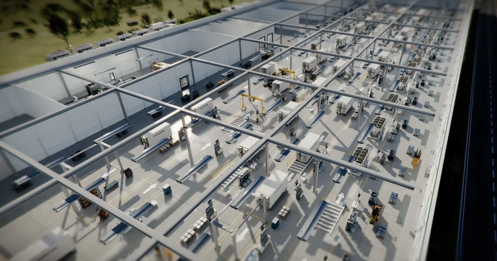

Могут ли центры обработки данных ИИ быть массовыми, как автомобили? Этот стартап стремится выяснить,
Runware строит завод по производству сборных ИИ-центров обработки данных на сборочной линии.
Настоящим испытанием будет то, сможет ли он работать в таком масштабе.